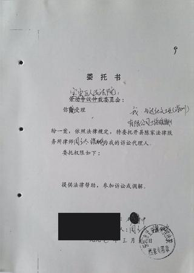
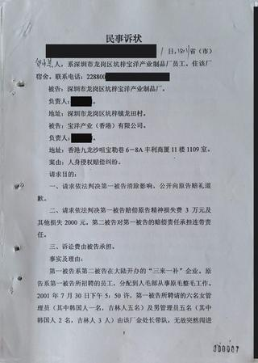
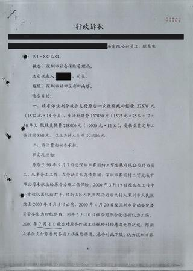
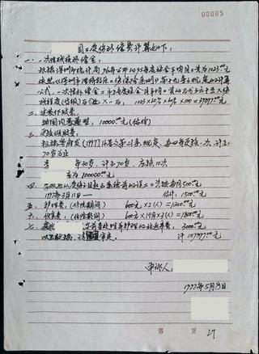
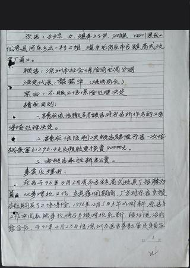
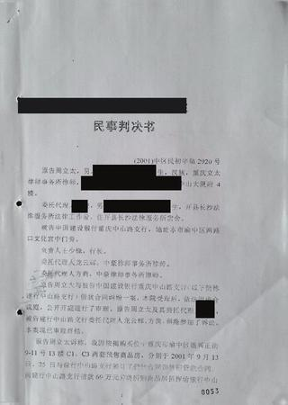
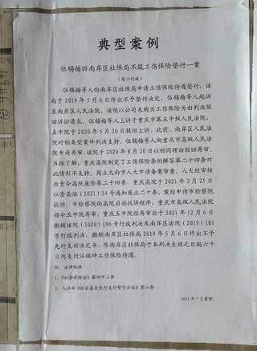
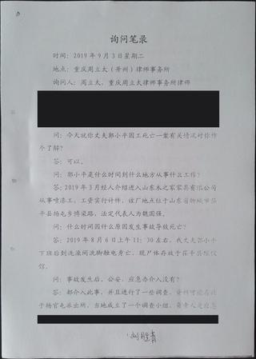
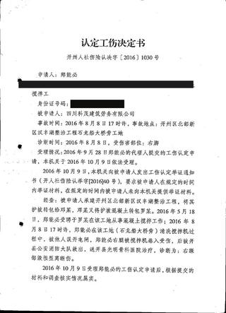

每一页呈现都取材于档案馆数据层的原始卷宗扫描与 OCR 文本，纸页图片均经脱敏处理、按叙事顺序排好，可以像翻卷宗一样逐页翻阅。九个案件构成一条跨越二十六年的叙事线——一只手的定价（1997，工伤赔偿标准的破题）→ 一小时的名称（2001，人格尊严的群体诉讼）→ 企业跑了谁买单（2000-2002，社保基金兜底先声）→ 一卷手写的官司（1997-1999，当事人自己的笔迹从头写到尾）→ 二十三岁的公式（1996-2002，书面决定权与基数之战）→ 律师成了原告（2001-2002，按揭年代的格式条款之战）→ 判决之后（2015-2021，地方文件的推倒）→ 二十年之后（2019-2023，当代续篇）→ 层层转包（2016-2019，工地上的断脚与两条路径的尽头）。

CASE-000518 页可翻
CASE-000112 页可翻
CASE-000923 页可翻
CASE-000619 页可翻
CASE-000815 页可翻
CASE-00035 页可翻
CASE-0002
CASE-000429 页可翻
CASE-00115 页可翻